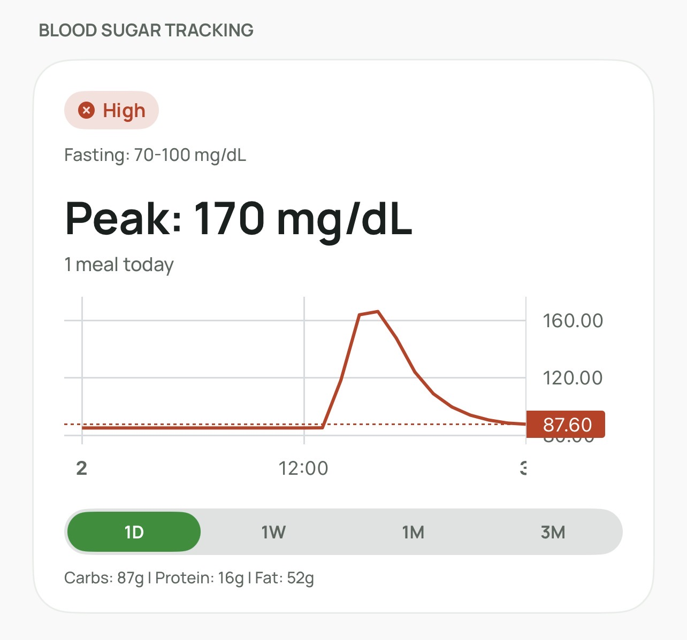
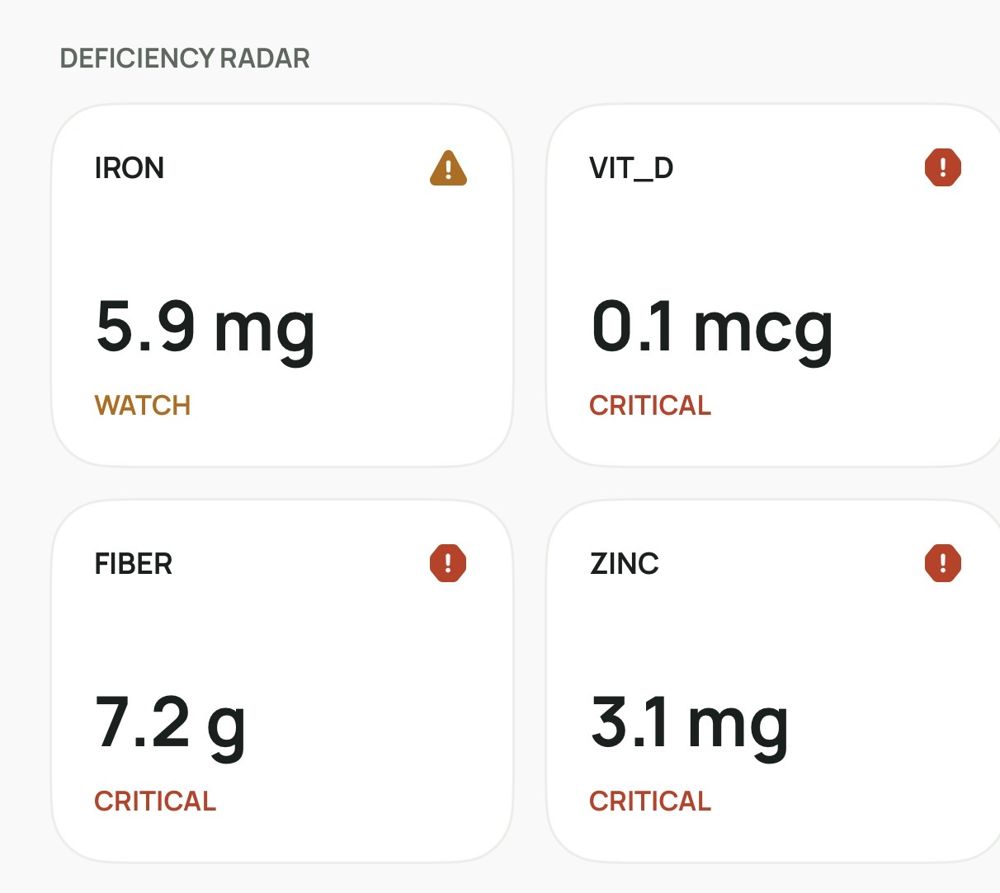
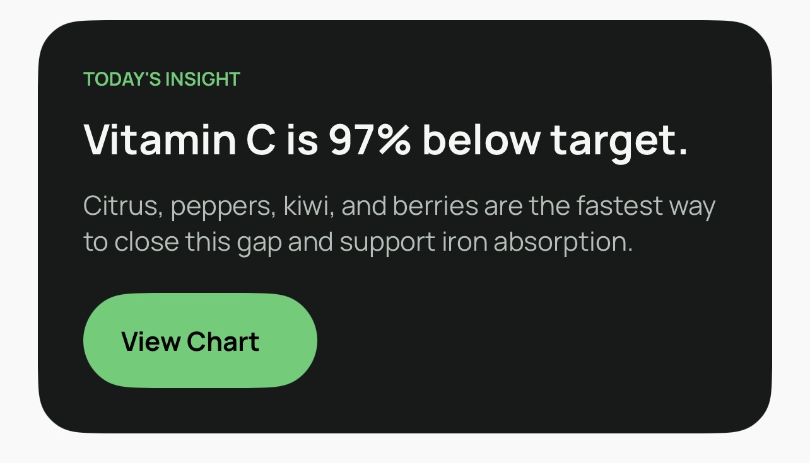
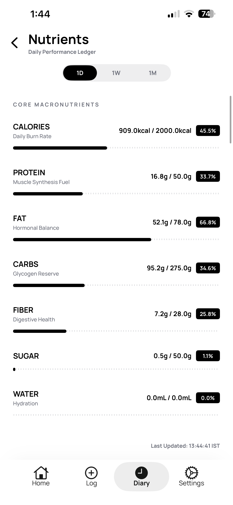
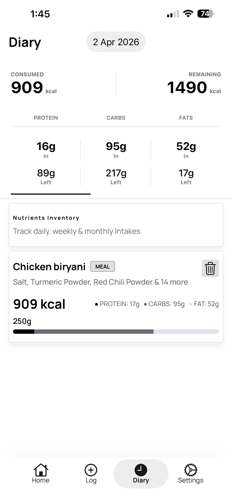

SuperYou: The high-fidelity interface for precision nutrition tracking. Real-time nutrient monitoring meets clinical-grade deficiency detection.

Simultaneous tracking of food intake alongside real-time nutritional analysis. Identify patterns instantly.

Advanced nutrient surveillance scanning for micro-deficiencies with real-time visual alerts and risk profiling.


Immediate visualization of nutrient intake after meals. Track how your body responds to different foods with detailed breakdowns.
Algorithmic food recommendations specifically engineered to neutralize identified nutrient gaps in your profile.
Precision meal strategies tailored for weight loss, muscle gain, or overall health through optimal nutrient balance.

A high-fidelity audit trail documenting every nutrient intake and dietary data point for longitudinal analysis.
Standard nutrition apps provide surface-level data. SuperYou provides comprehensive nutrient tracking with real-time deficiency alerts for better health management.
| Diagnostic Layer | Legacy Apps | SuperYou Terminal |
|---|---|---|
| Glucose Integration | MANUAL ENTRY ONLY | REAL TIME |
| Nutrient Density | BASIC MACROS | MICRO ACTIVE |
| Prediction Model | NON PREDICTIVE | BLOOD GLUCOSE PREDICTION |
Health isn't a destination—it's a daily practice. SuperYou transforms your nutritional data into actionable insights. Get notified about deficiencies before they become problems.